|
Soonbin Lee (이순빈)
I'm a Research Associate at Fraunhofer Heinrich-Hertz-Institut (HHI) in Berlin, Germany. I work in the multimedia communications group, which primarily focuses on immersive media technologies such as NeRF, 6DoF media compression and streaming system.
Before joining the HHI, I received B.S. degree from Gachon University and M.S. degree from Sungkyunkwan University (SKKU). I participated in the standardization of ISO/IEC 23090-12 MPEG immersive video (MIV), with Prof. Eun-Seok Ryu.
Most of my research focuses on processing and transmitting new media. Specifically, I'm interested in visual data compression and video coding systems for multimedia.
Email /
Linkedin /
CV /
Google Scholar
|
|
News
- 03/2026 GS compression demo paper (IEEE VRW) & Invited paper (DCC) will be presented
- 03/2026 Dynamic 3DGS Real-time decoding demo, Mobile World Congress (MWC) 2026
- 01/2026 GS compaction paper, arXiv preprint
- 10/2025 (Ongoing) JVET AHG9 contribution: Gaussian splatting SEI messages
- 06/2025 GS compression paper, ICCV 2025
- 07/2024 NeRF compression paper, MMSP 2024 (Oral)
|
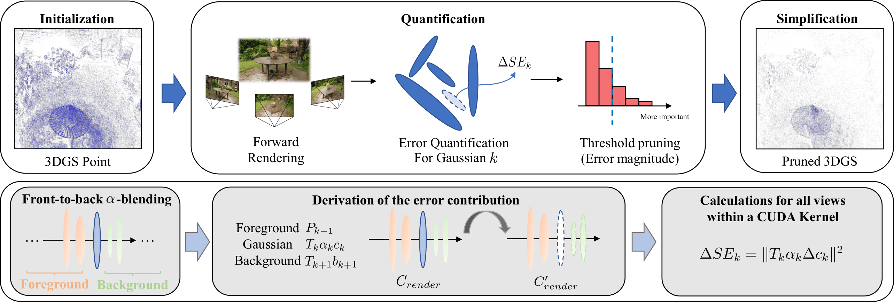 |
GaussianPOP: Principled Simplification Framework for Compact 3D Gaussian Splatting via Error Quantification [Project Page]
Soonbin Lee, Yeong-Gyu Kim, Simon Sasse, Tomas M. Borges, Yago Sanchez, Eun-Seok Ryu, Thomas Schierl, Cornelius Hellge
arXiv, 2026
|
|
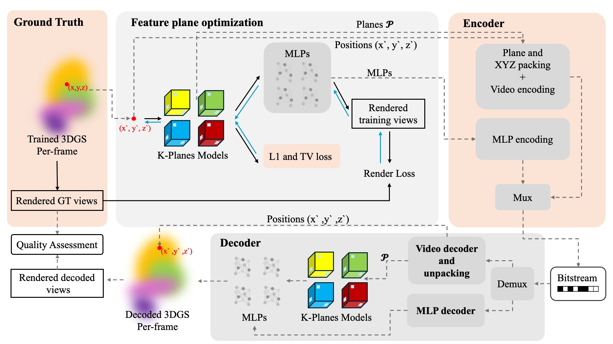
|
CodecGS-IR: Implicit Representation for Decoder-friendly Video-based Gaussian Splat Compression
Soonbin Lee, Simon Sasse, Yago Sánchez, Robert Skupin, Tomás M. Borges, Cornelius Hellge, Thomas Schierl
Data Compression Conference (DCC), 2026, Invited Paper
|
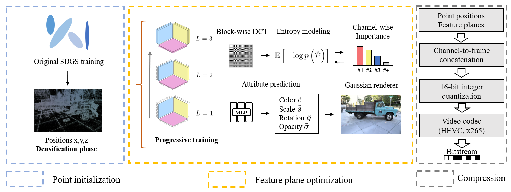 |
Compression of 3D Gaussian Splatting with Optimized Feature Planes and Standard Video Codecs [Project Page]
Soonbin Lee, Fangwen Shu, Yago Sanchez, Thomas Schierl, Cornelius Hellge
International Conference on Computer Vision (ICCV), 2025
|
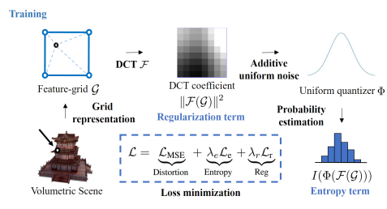 |
ECRF: Entropy-Constrained Neural Radiance Fields Compression with Frequency Domain Optimization
Soonbin Lee, Fangwen Shu, Yago Sanchez, Thomas Schierl, Cornelius Hellge
IEEE International Workshop on Multimedia Signal Processing (MMSP), 2024 (Oral Presentation)
|
|
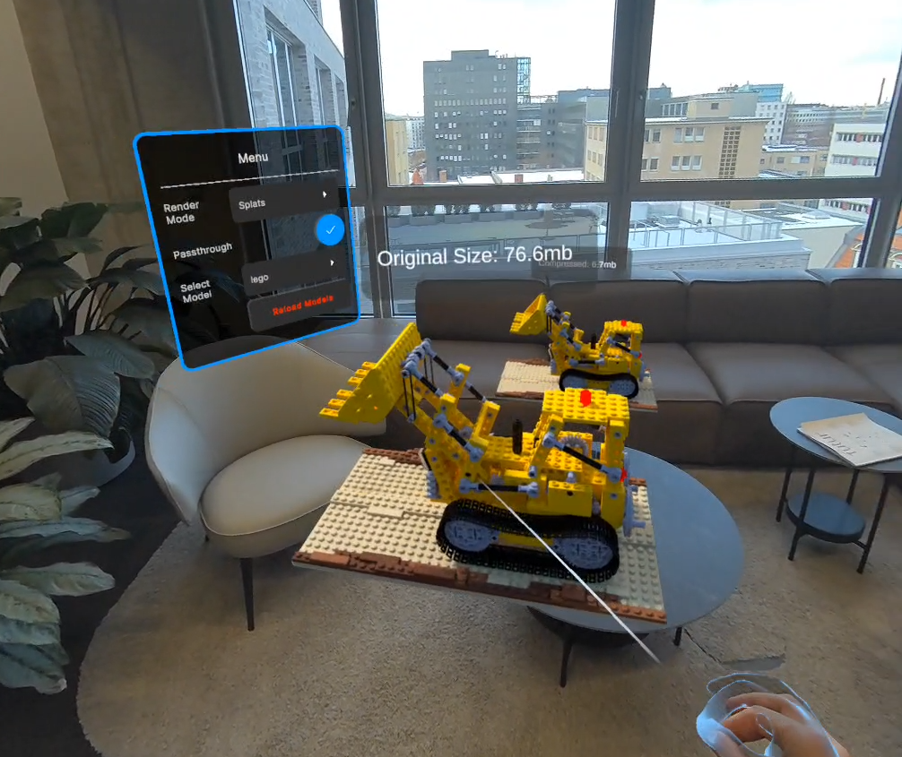
|
Enabling Feature Plane-based 3D Gaussian Splatting on Mobile VR from Video Streams
Soonbin Lee, Simon Sasse, Yago Sánchez, Cornelius Hellge, Thomas Schierl
IEEE Virtual Reality and 3D User Interfaces Workshop (VRW), 2026
|
|
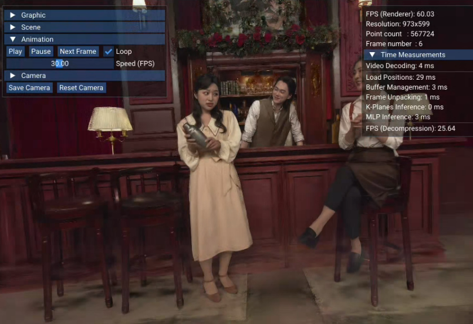
|
Turning 4D Gaussian Splats into Video Streams
Real-time decoding Per-frame Gaussian Splatting with entirely re-written decoding pipeline
Congress Square CS64, Fraunhofer HHI Booth
Mobile World Congress (MWC) Demo, 2026
|
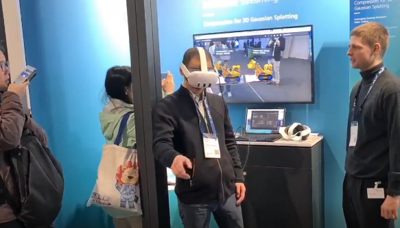
|
Leveraging Video Codec for 3DGS Compression [Press]
Unity's ffmpeg integration with feautre plane compression (based on ICCV 25)
Congress Square 6G28, Fraunhofer HHI Booth
Mobile World Congress (MWC) Demo, 2025
|
Standardization Contributions
|
AHG9: Support for implicit representations with the Gaussian splatting information SEI message
- JVET-AN0264/m74316, 2025.10
- JVET-AO0210/m75278, 2026.01
|
MPEG-I Immersive Video (MIV)
- +10 MIV-related contributions (-2023)
|
Patents
|
Fraunhofer HHI
- + 5 SEI-related patents (pending)
- glTF-related patents (pending)
|
Sungkyunkwan University (SKKU)
- + 10 US/KR patents (-2023)
- 2 US patents, LG Electronics Inc. (-2023)
|
Academic Service
|
|
Reviewer
- Journals: IEEE TCSVT, TMM, TVCG, TNNLS; Multimedia Systems; Virtual Reality
- Conferences: ACM MM 2024–2026, DCC 2024
|
|
Thesis Supervisor
- Simon Sasse (Master's Thesis, FU Berlin, with Prof. Peter Eisert)
"Optimizing 3DGS Feature Planes for Codec-Enhanced Compression"
|
Previous Record
|
- MCSL Outstanding Research Award, 2022
- SIGMM Student Travel Grants, ACM MMSys, 2022
- Research Paper Award, SKKU Graduate School, 2022
- President's Award, Gachon University, 2020
|
|
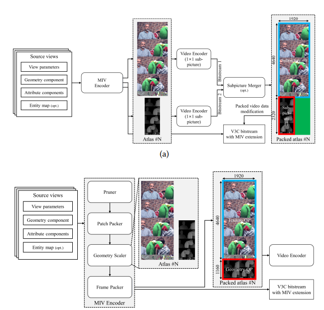
|
DATRA-MIV: Decoder-Adaptive Tiling and Rate Allocation for MPEG Immersive Video
Jong-Beom Jeong, Soonbin Lee, Eun-Seok Ryu
ACM Transactions on Multimedia Computing, Communications, and Applications (TOMM), Vol. 20, No. 7, pp. 1-22, May. 2024
|
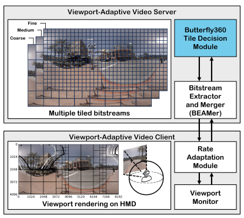
|
Fine-grained Single-layer Tiling for Viewport-Adaptive 360-degree Video Streaming
Jong-Beom Jeong, Jun-Hyeong Park, Soonbin Lee, Eun-Seok Ryu
IEEE Visual Communications and Image Processing (VCIP), 2023 (Oral Presentation)
|
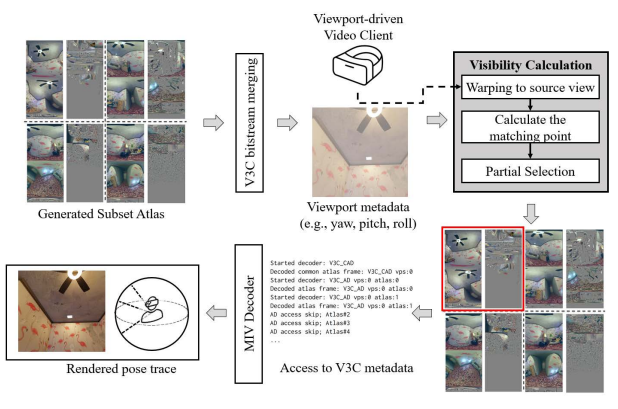
|
Implementing Partial Atlas Selector for Viewport-dependent MPEG Immersive Video Streaming
Soonbin Lee, Jong-Beom Jeong, Eun-Seok Ryu
ACM Workshop on Network and Operating System Support for Digital Audio and Video (NOSSDAV), 2023 (Oral Session at MMSys23)
|
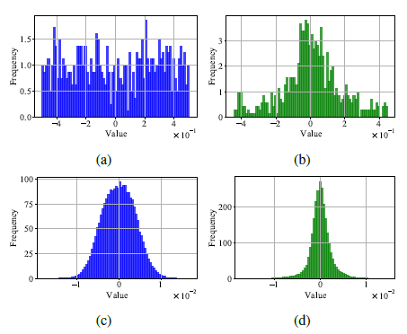
|
Entropy-constrained Implicit Neural Representations for Deep Image Compression
Soonbin Lee, Jong-Beom Jeong, Eun-Seok Ryu
IEEE Signal Processing Letters (SPL), Vol. 30, pp. 663-667, May. 2023
|
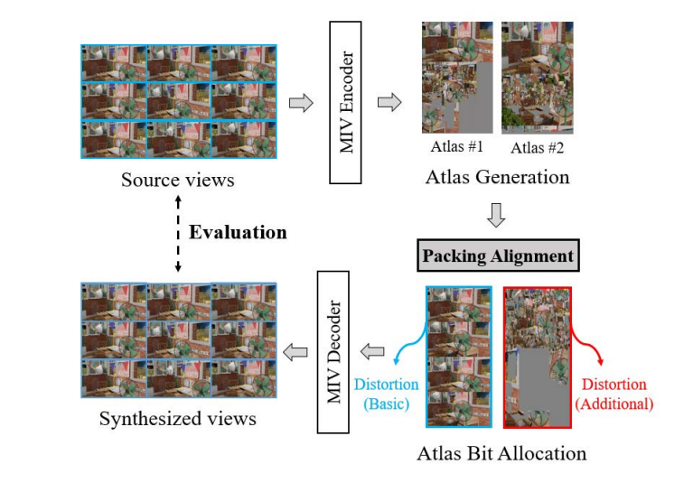
|
Atlas Level Rate Distortion Optimization for 6DoF Immersive Video Compression
Soonbin Lee, Jong-Beom Jeong, Eun-Seok Ryu
ACM Workshop on Network and Operating System Support for Digital Audio and Video (NOSSDAV), 2022 (Oral Session at MMSys22)
|
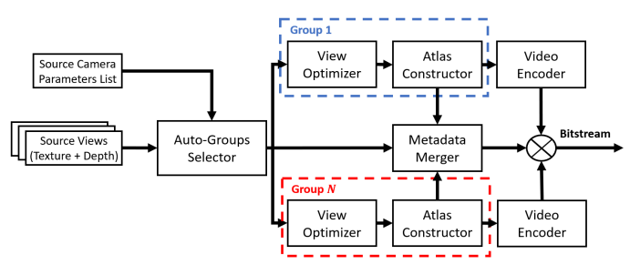
|
Group-Based Adaptive Rendering System for 6DoF Immersive Video Streaming
Soonbin Lee, Jong-Beom Jeong, Eun-Seok Ryu
IEEE Access, Vol. 10, pp. 102691-102700, Sep. 2022.
|
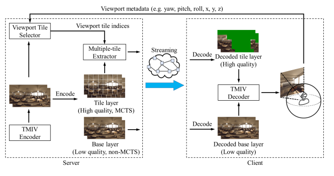
|
Towards Viewport-dependent 6DoF 360 Video Tiled Streaming for Virtual Reality Systems
Jong-Beom Jeong, Soonbin Lee, Il-Woong Ryu, Tuan Thanh Le, Eun-Seok Ryu
ACM Multimedia (MM), 2020
|
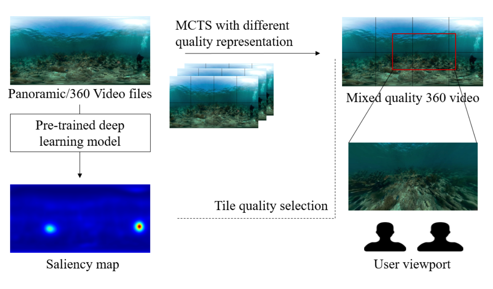
|
Motion-constrained Tile Set based 360-Degree Video Streaming Using Saliency Map Prediction
Soonbin Lee, Dongmin Jang, Jong-Beom Jeong, Eun-Seok Ryu
ACM Workshop on Network and Operating System Support for Digital Audio and Video (NOSSDAV), 2019 (Oral Session at MMSys19)
|
- US 2023/0334706A1
- US 2022/0343545A1
- US 2022/0256131A1
- US 2022/0217314A1
- US 2022/0116578A1
- US 18/354,983
- US 18/338,613
- US 18/115,248
- KR 10-2500199
- KR 10-2484999
- KR 10-2412410
- KR 10-2356037
- KR 10-2209192
- KR 10-2023-0142819
- KR 10-2023-0077401
- KR 10-2023-0003994
|
- "[MIV] On Delta QP for Additional View Atlases", document MPEG2022/m60377
- "[MIV] Geometry Packing Implementation in TMIV for Frame Packed Video", document MPEG2022/m59442
- "[MIV] Joint bit allocation for MIV with rate-distortion optimization", document MPEG2021/m58150
- "[MIV] Extraction and Merging on Frame Packed Video", document MPEG2021/m56591
- "[MIV] Basic View Packing with Screen Content Coding (SCC)", document MPEG2021/m55966
- "[MPEG-I VIsual] EE Results on Dense Light Field Video Compression using VVC”, document MPEG2021/m55965
- "[MPEG-I Visual] Report on Asymmetric Quantization on MIV", document MPEG2020/m55014
- "[MPEG-I Visual] Report on Dense Light Field Compression in VVC", document MPEG2020/m55013
- "On MCTS based tile extractor implementation", document MPEG2020/m53911
- "Group Tiling in TMIV", document MPEG2019/m51639
- "CE1: Viewport Tile Selector in TMIV for Viewport-dependent Rendering", document MPEG2019/m51638
- "CE3: Viewport-dependent Patch Grouping Using HEVC Tiles", document MPEG2019/m50818
|
|
{kind=link}